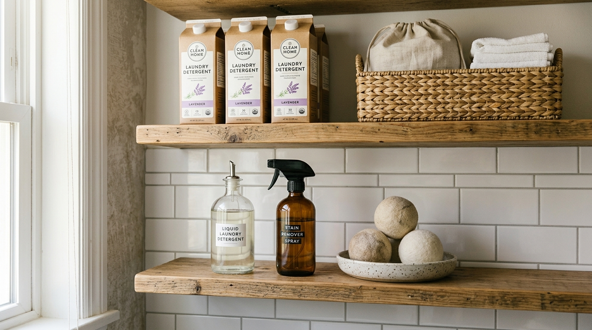

Walk into almost any small laundry area or utility closet, and you will notice a familiar scene: the top of the dryer or the most accessible eye-level shelf is crowded with bottles.
There is the bottle of liquid detergent currently in use, sitting right beside a giant 150-oz unopened backup jug. Next to that is a half-empty spray bottle of stain remover, three different specialty laundry boosters, a stray box of dryer sheets, an extra container of detergent pods, and two loose wool dryer balls rolling around the edge.
Every time you start a load of wash, you have to maneuver around heavy jugs, reach past products you haven't touched in three months, and push aside duplicates just to measure out a single cup of detergent.
The problem is rarely that your laundry room lacks storage space. The problem is that your active supplies and your backup supplies are competing for the exact same prime real estate.
When you implement The One-Cycle Supply Rule, you eliminate this competition. By separating what you need for today's laundry cycle from what you are storing for future cycles, your laundry area instantly becomes clearer, calmer, and significantly easier to use.
Why Laundry Supplies Take Over the Working Zone
In most households, laundry clutter does not happen out of neglect—it happens because of an instinctive desire for convenience:
- The "Unpack and Place" Habit: When bringing home a multi-pack from the grocery store, it feels natural to put all of it directly onto the nearest laundry shelf.
- Equal-Priority Trap: A giant backup box of detergent pods receives the same front-row placement as the single pod you need this morning.
- Surface Creep: Because folding counters and machine tops are convenient flat planes, they become default landing pads for every bottle, spray, and accessory.
Easy-access space in a small laundry room is your most valuable asset. When unopened duplicates and occasional specialty products occupy that prime zone, they create daily visual and physical friction. Having backup supplies is smart household management—the issue is simply where those backups are stored.
To see how daily routines maintain clear surfaces between loads, explore our guide to the 5-minute laundry room reset routine.
What Is the One-Cycle Supply Rule?
The One-Cycle Supply Rule is a simple, reusable mental model based on a 3-part framework:
ACTIVE → EASIEST REACH
BACKUP → SECONDARY STORAGE
EMPTY → REFILL / REPLACE

Here is what each component represents in practice:
- ACTIVE: The single detergent container, everyday stain spray, and dryer balls currently in use for standard weekly washing. These live in the easiest reach zone.
- BACKUP: Unopened detergent refill cartons, duplicate bottles, specialty wool washes, and seasonal fabric treatments. These live in secondary storage.
- EMPTY: The exact moment an active container runs out. Crucially, “EMPTY” is not a storage category—it is the operational trigger for your next action. When a bottle empties, you either refill it from secondary storage or replace it.
"You do not need every laundry supply you own within arm's reach. You only need the supplies you are actively using for the current cycle."
Think in Terms of the Next Laundry Cycle
Traditional organization asks: “Where can I fit all of these laundry bottles?”
The One-Cycle Supply Rule asks: “What do I actually need to run the next load of laundry?”
For 95% of standard household loads, you only need two or three items:
- Your standard everyday detergent
- An active bottle of stain treatment
- Dryer balls or sheets
When you organize around the immediate cycle, you immediately liberate your countertop and eye-level shelves from heavy bulk packaging. The next load becomes effortless to start because there are zero unnecessary objects standing between you and the washing machine.
For more on structuring your entire washing and drying pipeline, see our breakdown of the laundry workflow rule.
How to Divide Your Laundry Storage (3 Access Levels)
To implement the system, map your existing shelves and cabinets into three functional access tiers:
1. Active Supplies — Easiest Reach
Placement: The front row of an eye-level shelf directly above the washer, or a compact tray on the counter beside the machine.
Contents:
• 1 active detergent dispenser or bottle
• 1 active stain remover spray
• 1 small dish or basket with wool dryer balls
• 1 mesh delicates washing bag (if used regularly)
2. Backup Supplies — Secondary Storage
Placement: Upper cabinet shelves, the rear section of deep shelves, a narrow utility cart, or a high linen closet shelf.
Contents:
• Unopened bulk detergent jugs and refill boxes
• Extra containers of laundry pods
• Specialty stain treatments (e.g., rust remover, fabric dye)
• Delicates/wool wash used once a month
• Backup dryer sheets and washing machine cleaning tablets
3. Empty — Refill or Replace
Action: When the active bottle empties, it immediately triggers the restock loop. Pull a backup from secondary storage to refill the active container, or add the item to your digital grocery list before recycling the empty bottle.
For clever ways to create secondary storage in tight corners, explore our guide to vertical storage in a small laundry room.
A Simple 5-Minute Laundry Supply Reset
You can transition your laundry area to the One-Cycle system right now in six quick steps:
- Clear the Working Zone: Remove all bottles, boxes, and sprays from your primary shelf or machine top.
- Select Your Active Core: Pick the single detergent you reach for most, your main stain spray, and your dryer accessories. Set them aside.
- Consolidate the Backups: Gather all unopened detergent jugs, duplicate sprays, and bulk pod boxes.
- Relocate to Secondary Storage: Place the backups onto a higher shelf, inside an upper cabinet, or into an under-counter bin.
- Return Only Active Supplies: Place your 2–3 active essentials back onto the eye-level shelf in a neat, single-row line.
- Lock in the Next-Action Trigger: Remind yourself that an empty bottle is simply a prompt to refill from secondary storage.
Before and After: What Actually Changes?
The beauty of this framework is that your room's physical dimensions remain identical, yet the functional experience transforms completely:
| Dimension | Before (Uncontrolled Competition) | After (The One-Cycle Rule) |
|---|---|---|
| Prime Shelf / Counter | Crowded with 8–12 active & backup jugs | Clean, spacious row of 2–3 active items |
| Starting a Load | Navigating past heavy boxes and knocking bottles over | One-second grab and pour with zero obstruction |
| Inventory Awareness | Unclear how much detergent remains across multiple open containers | Crystal-clear awareness: 1 active bottle + designated backup stock |
| Folding Space | Machine tops occupied by bottles and clutter | Flat surfaces remain clear for sorting and folding |
To learn how to optimize your newly cleared surfaces for folding clothes, check out our guide on organizing a laundry folding area in a small space.
What This Rule Does NOT Mean
To prevent the One-Cycle Supply Rule from becoming restrictive, keep these clarifications in mind:
- It does NOT mean extreme minimalism: Buying bulk detergent at warehouse clubs is economical and smart. The rule simply asks you to store the bulk container in secondary storage while keeping a manageable amount active.
- It does NOT require buying matching aesthetic containers: While decanting into glass dispensers looks pleasant, you can use standard retail bottles. The system is about accessibility hierarchy, not matching aesthetics.
- It does NOT forbid specialty products: If you wash delicate wool sweaters or athletic gear occasionally, you should keep those products—just keep them on secondary shelves until the day you actually wash those items.
- It does NOT demand a complex tracking spreadsheet: The active container itself is your visual inventory tracker. When it runs low, you know it's time to act.
How to Keep the System Working Effortlessly
Maintaining the One-Cycle framework requires almost zero ongoing effort because it operates on a self-regulating loop:
- When an active supply runs out: Retrieve the backup, place it in the active zone, and note the need for a restock on your next shopping run.
- When you finish a specialty laundry task: (such as soaking muddy hiking gear with an enzyme soak), immediately return the specialty bottle to secondary storage rather than letting it linger on the counter.
- When bringing home groceries: Walk the new detergent directly to your secondary backup zone rather than setting it on the machine top.
The Simple Rule to Remember
Whenever your laundry area starts feeling cramped or messy, recite the core principle:
ACTIVE → EASIEST REACH
BACKUP → SECONDARY STORAGE
EMPTY → REFILL / REPLACE
You are not organizing around everything you own. You are organizing access around what you currently use.
For more space-saving strategies and layout tips, browse our comprehensive collection of laundry room organization ideas.
Frequently Asked Questions
If you genuinely alternate between liquid and pods for different weekly loads, both can qualify as "Active Supplies." The key is to keep only one active container of each in prime reach, while storing bulk backup boxes in secondary storage.
In laundry closets without upper cabinets, use the floor space beside the washing machine, a slim rolling utility cart, or the floor of a nearby hallway linen closet for secondary bulk storage.
Decanting is completely optional, but for small laundry spaces, transferring detergent from a heavy 150-oz jug into a lightweight 32-oz pump or glass dispenser makes pouring easier, reduces counter clutter, and keeps the active zone compact.
Are you 18-24 or a Student? Get 6 Months of Prime for $0!
Limited Time Offer (Ends Oct 9): Enjoy fast, free shipping, unlimited streaming, $0 food delivery (Grubhub+), fuel savings (10¢/gal), Prime Reading, unlimited Amazon Photos storage, and exclusive grocery deals. Claim your 6-month free trial of Prime for Young Adults today.
Try Prime for Free →